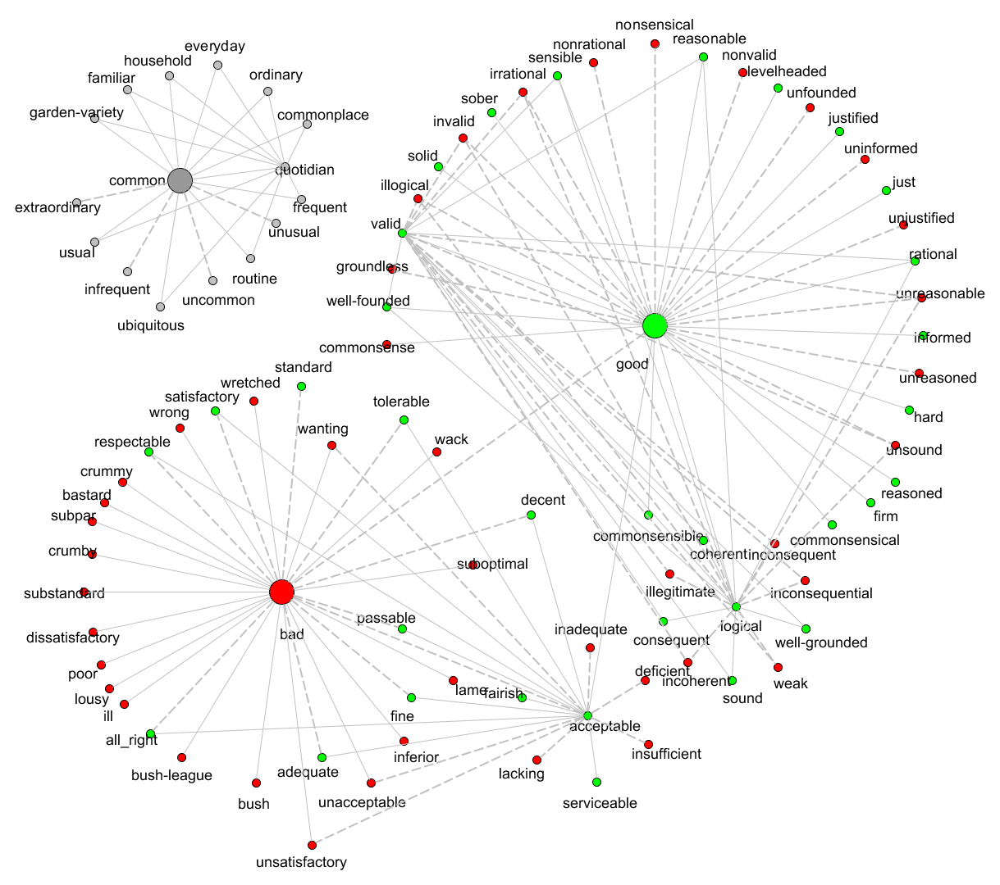

This my first repository. A test repository.

This is an implementation in Java of the polarity propagation algorithm
described on [1], section "3. The Polarity Propagation Algorithm",
for classifying words, multiwords and synsets as positive, negative and
neutral based on an undirected graph.
This implementation also allows running the algorithm described on [2],
section "2.3 Simple and Intuitive Polarity Propagation - Algorithm",
for classifying words as positive or negative based on a direted graph.
In both algorithms, the goal is to start with a small set of words, multiwords
or synsets manually classified, and automatically classify a bigger set of words as
positive, negative or even neutral.
The set of words produced by these algorithms, may be useful, for example,
for building a dictionary of sentiment words for Sentiment Analysis / Opinion Mining.
The source code, binaries and more information can be found in https://github.com/i000313/test-repo.
Santos, A. P., Gonçalo Oliveira, H., Ramos, C., & Marques, N. C. (2012). A Bootstrapping Algorithm for Learning the Polarity of Words. In Proceedings of 10th International Conference - Computational Processing of the Portuguese Language (PROPOR 2012), volume 7243 of LNCS, pp. 229-234. Coimbra, Portugal. Springer.
Santos, A. P., Ramos, C., & Marques, N. C. (2011). Determining the Polarity of Words through a Common Online Dictionary. In Proceedings of 15th Portuguese Conference on Artificial on Artificial intelligence (EPIA 2011), volume 7026 of LNCS, pp. 649-663. Lisbon, Portugal. Springer.